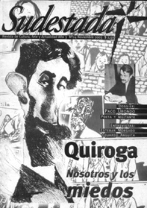

Buscar
Lennie Tristano - La tercera corriente
Edición N° 24
Noviembre 2003
Revista bimensual
Comprar edición impresaSumario
- Horacio Quiroga. Nosotros y los miedos
- Mesa de saldos
- Fischer vs. Spassky - Piezas del tablero mundial
- Esteban Morgado: "Con la música uno puede sentir que la libertad es posible"
- Eduardo Anguita: Cartoneros
- Lennie Tristano - La tercera corriente
Compartir Articulo
Valiéndose solo de sus manos y de su increíble sentido de la intuición para desplazarse sobre las teclas de su piano, el pequeño Lennie fue aprendiendo en su Chicago natal y en poco tiempo supo que podría convertirse en un músico excepcional.
Aunque muchos críticos tildaron su música de intelectual, fría y abstracta, Tristano supo ganarse su lugar entre los músicos más influyentes del género. A pesar de haber quedado ciego a temprana edad empezó sus estudios de piano en sistema braile con un profesor particular. Con tan solo once años empieza a actuar profesionalmente con la banda de su escuela. Luego estudiaría en la Escuela American Conservatory of music donde asombraría a sus maestros por su rápida forma de aprender. Ya que el curso de armonía que duraba tres años lo hizo en tres semanas, el de composición en menos de una y su masters en tres, componiendo para su graduación dos cuartetos de cuerda, varias piezas para piano. A pesar de todo no pudo graduarse porque no le alcanzaba el dinero para pagar su título. En 1943 empieza a enseñar en la escuela popular de música Cristians, asistiendo sólo a los músicos más avanzados. Tristano empezó a tocar en la calle 52 donde causó sensación entre los músicos de ese entonces (Charlie Parker, Dizzy Gilelspie, Lester Young). A pesar de respetar mucho a sus colegas sostenía que el músico de jazz debe escapar a lo mecánico y estereotipado, moviéndose hacia algo emocional y de foemas sutiles. En sus método de enseñanza (a la inversa de lo que hacían los modernos colegios de sus cursos de improvisación). Los ejercicios técnicos eran estudiados pensando que serían incorporados a las líneas de los solos, pero no como patterns (patrones) sino como parte de un todo musical.
Aunque no pasaba discos en sus clases sugería a sus alumnos escuchar discos de Bird, Lester Young o Amstrong hasta que pudieran cantar sus solos nota por nota.
Los ejercicios que hacía para desarrollar su técnica en el piano explica el porqué de sus fantásticos dotes tan discutidos. Para su mano izquierda trabaja en dos líneas diferentes: los dos dedos asignados a las líneas de abajo y los otros tres restantes a la improvisación. Dicen que en uno de sus conciertos un joven sintió paralizada su mano derecha al oirlo tocar en la llamada competencia kinestisica.
Pero no se puede resumir la obra de Tristano a su modo de enseñanza y a la forma de explicarla, sin dejar de lado de lado su contribución como autor de grandes obras de este maravilloso género. Son innumerables los aportes de Lenie al jazz creó un estilo nuevo de be-bop (cool jazz). Muchos lo llaman la evolución del be-bop, para otros el término cool significa frío en contrapartida al jazz hot (caliente), pero el término que se nombra es el de fresco. Le dio esa brisa que le faltaba a esa gran generación de músicos de sa época, con trabajos como Intuition yesterday (improvisaciones libres, con o sin estructura armónica), que se anticipan al free jazz de los '60. En estudios de grabación impuso la técnica de sobre grabación de varias pistas de piano. Hasta se atrevió a aumentar las velocidades de las cintas mismas. Se podría decir que a pesar que ese mismo fue Miles Davis con la grabación Birdth off de cool fue el pionero en acuñar ese estilo. El propio Gery Mulligan (quien tocó con Davis en esta obra) dirá: "en lo que al nacimiento del cool se refiere Lenie fue más responsable que las sesiones de Miles. Había más frescura en su trabajo, en el nivel dinámico. Además siempre siguió su propio camino y nunca se acercó al gran mundo".
La tercera corriente dentro del jazz (cool jazz) es la combinación de la música clásica europea con la música negra, pero no con el ocasional préstamo de un ritmo o alguna blue note, sino en obras compuestas para músicos clásicos, e improvisadores de jazz tocando juntos. Y nuestro amigo reunía estas dos condiciones.
Para terminar recomiendo escuchar toda su obra, ya que no alcanza con este breve comentario para disfrutar del trabajo de este genial jazzmen blanco a pesar de que los franceses piensan distintos, como dice él: "tengo la clara sensación de que los franceses piensa que los músicos blancos no pueden tocar jazz. Cuando estuve en París (1965). Hablé con muchas personas de estos problemas y, de alguna manera, me han confirmado esta impresión que yo tenía: en Francia se cree que los blancos no sirven tanto como los negros".
La nota completa en la edición gráfica Nº24
Comentarios
Carlos Ortíz
Articulos más vistos


LIBRERÍA SUDESTADA

Colección infantil

Distribuidora de Libros

Suscripción

Sudestada en URUGUAY

Otros articulos de esta edición
Eduardo Anguita: Cartoneros
En medio de la crisis, los cartoneros se multiplican cada noche, con sus historias a cuestas. "Cartoneros. Recuperadores de desechos ...
Horacio Quiroga. Nosotros y los miedos
Si existe un género poco abordado desde la literatura argentina, ese es el terror. El miedo como protagonista, como alimento, ...
Esteban Morgado: "Con la música uno puede sentir que la libertad es posible"
A punto de editar su tercer disco de manera independiente, Esteban Morgado es uno de los más talentosos guitarristas y ...
Fischer vs. Spassky - Piezas del tablero mundial
En plena guerra fría, el campeonato mundial de ajedrez se convirtió en una cuestión de estado para rusos y norteamericanos. ...